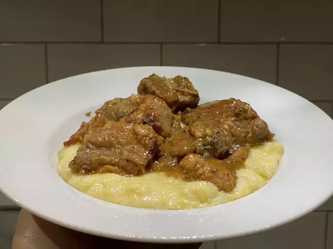

Pork al Latte

Pork al Latte
Description
When the weather gets a little colder, this pork al latte really hits the spot. Pork shoulder meat is braised in a crème fraîche sauce until amazingly tender and delicious. Serve on polenta with crisp sage leaves for garnish.
Recipe:
- 1 tablespoon olive oil
- 2 slices bacon, coarsely chopped
- 1 ½ pounds pork shoulder, cut into 2-inch chunks
- salt and freshly ground black pepper to taste
- 1 small yellow onion, diced
- 4 cloves garlic, sliced
- 1 ¼ cups chicken broth
- ½ cup creme fraiche
- 2 tablespoons chopped fresh sage leaves
- 1 pinch red pepper flakes, or to taste
- ¼ cup olive oil
- 15 whole fresh sage leaves
Recipe:
- Pour 1 tablespoon olive oil into a skillet, place over medium heat, and cook bacon, stirring often, until crisp and bacon fat has rendered into the skillet, about 5 minutes.
- Season pork cubes generously with salt and black pepper. Remove bacon from pan and set aside, reserving fat in pan. Turn heat to medium-high and brown pork pieces in bacon drippings until well browned on both sides, about 5 minutes per side. Transfer meat to a bowl, leaving pan drippings in skillet.
- Turn heat to medium and stir in chopped onion and a pinch of salt. Cook and stir onion until translucent and slightly browned, about 5 minutes. Stir garlic into onion and cook until fragrant, about 1 minute.
- Pour chicken broth and crème fraîche into onion mixture; whisk until smooth. Scrape up and dissolve any browned bits of food on the bottom of the skillet. Bring mixture to a simmer.
- Return bacon to sauce and stir in 2 tablespoons chopped sage. Place pork pieces into simmering sauce along with any accumulated juices from the meat. Reduce heat to low, cover, and simmer until meat is almost tender, about 1 hour.
- Raise heat to medium and cook uncovered until pan sauce reduces and thickens and meat is very tender, about 20 more minutes. Stir red pepper flakes into sauce; adjust seasonings to taste.
- Heat 1/4 cup olive oil in a small skillet over medium heat; drop whole sage leaves into hot oil and cook, lightly tossing leaves in oil, until crisp, 10 to 15 seconds. Drain sage leaves on paper towels and crumble over pork.
Odin Recipes